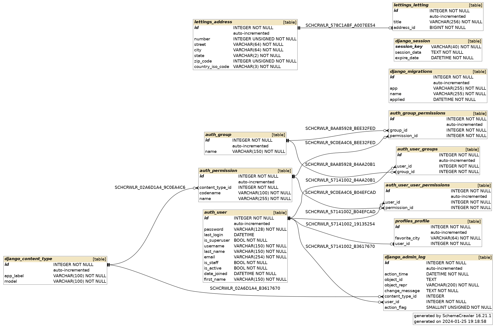

Structure de la base de données
Base de données et structure des modèles - Base de données SQLite3
SQLite est une bibliothèque C qui fournit une base de données légère basée sur le disque qui ne nécessite pas un processus de serveur séparé.
Nous pouvons accéder à la base de données en utilisant une variante non standard du langage de requête SQL. Il s’agit d’une base de données SQL autonome, basée sur des fichiers.
En tant que tel, nous n’avons pas besoin d’installer de modules ou de logiciels supplémentaires au fur et à mesure qu’il est fourni avec Python, et en plus, Django l’utilise nativement lors de la création d’un nouveau projet.
Contenu de la base de données
Il y a 3 objets principaux dans la base de données:
1- Les Profils des utilisateurs/clients : Chaque profil a un id (non affiché), un favori-city et un id-utilisateur (non affiché). Un profil affiche certaines des informations de l’utilisateur stockées dans la table « utilisateur d’auth-utilisateur » : prénom, nom, adresse électronique et ville préférée.
2- Letting : Propriétés Listed où leur titre correspondant est affiché, Chaque letting a un id (non affiché), un titre, et est lié à une adresse-id (non affichée, voir ci-dessous).
3- Adresse : Adresses de chaque bien. Une adresse a un id (non affiché), un numéro, une rue, une ville, un état, un code postal et un code ISO de pays.
S’assurer que vous êtes dans le répertoire du projet :
cd [Nom_du_répertoire_du_projet]
Ouvrez une session Shell pour sqlite :
sqlite3
Connectez-vous à la base de données :
.open oc-lettings-site.sqlite3
Afficher les tables dans la base de données :
.tables
Afficher par exemple les colonnes dans le tableau des profils :
PRAGMA table_info("profiles_profile");
Lancer une requête sur la table des profils pour filtrer uniquement les enregistrements où la valeur de la colonne favorite_city commence par la lettre “B” :
select user_id, favorite_city from profiles_profile where favorite_city like 'B%';
Voici le diagramme de notre base de données
–
Agrandir et voir cette Image sur une autre plateforme–